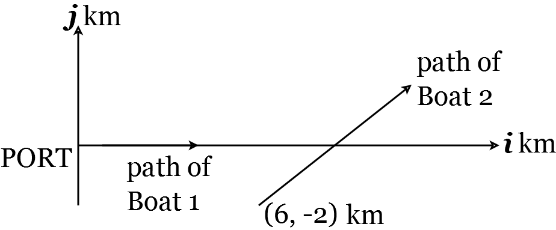
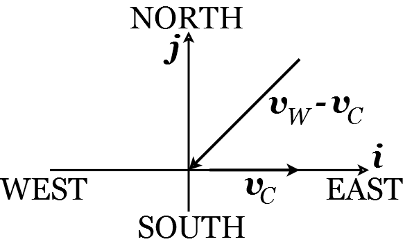

Lecture 16. Relative motion#
In the previous lecture, we looked at the motion of particles relative to a fixed origin, which we denoted by \(O\). However, in reality objects will often be moving relative to one another. For example, you may be running in the park and about to reach a junction of footpaths, but see a cyclist coming along another path towards the same junction. Your motion relative to the cyclist determines whether one of you needs to change speed to avoid a collision. Similar situations happen at sea with boats moving along overlapping trajectories. In this lecture, we will develop the tools for modelling such situations. Let’s start with an example.
Example 24
At time \(t=0\) a boat leaves a port situated at the origin \(O\) and moves with uniform velocity \(u \mathbf{i} \mathrm{kmh}^{-1}\). (Here, \(\mathrm{kmh}^{-1}\) stands for ‘kilometres per hour’, the number of kilometres the boat will travel in an hour at its current speed.) A second boat is moving with uniform velocity \(5 \mathbf{i}+4 \mathbf{j} \mathrm{kmh}^{-1}\) and is initially at the point in the ocean with location vector \(6 \mathbf{i}-2 \mathbf{j} \mathrm{km}\) with respect to the origin, \(O\).
(a) Find the value of \(u\) for which the boats collide.
(b) Find the minimum distance between the boats when \(u=7\).
Solution.
The most important thing to do at the start of any question on relative motion is to draw a sketch. This is given in Figure 23.
Figure 23: Relative motion of two boats.
At time \(t\) hours, Boat 1 has velocity \(\mathbf{v}_{1}=u \mathbf{i} \mathbf{k m h}^{-1}\). Since it starts at the origin, its location vector in kilometres is
Boat 2 has velocity \(\mathbf{v}_{2}=5 \mathbf{i}+4 \mathbf{j} \mathbf{k m h}^{-1}\) and starts at \(6 \mathbf{i}-2 \mathbf{j}\) so its location vector in kilometres is
The location of Boat 2 relative to Boat 1 (in kilometres) is then
Denote by \(d(t)\) the distance in kilometres between the boats at time \(t\). Then \(d(t)=\) \(\left|\mathbf{r}_{2}(t)-\mathbf{r}_{1}(t)\right|\), so that
(a) If the boats collide, then \(d(t)=0\) for some \(t\). Under the square root in (202) we have the sum of two positive terms. Therefore, if \(d(t)=0\), both the positive terms under the square root must be zero. This means that both of the following hold
From (204), \(t=\frac{2}{4}=\frac{1}{2}\). Substituting this into in (203) gives
so that the boats collide when \(u=17\). (b) When \(u=7\),
Notice that \((t-1)^{2}=t^{2}-2 t+1\) so that
The minimum of \(d(t)\) is therefore the minimum of \((t-1)^{2}\), which is where \(t=1\). Here, \(d(t)=\sqrt{20}=4.47\) to three significant figures. Thus the minimum distance between the boats, when \(u=7\), is 4.47 km .
The previous example motivated a few concepts, which could do with formal definitions.
Definition 17
Suppose we have two moving objects, \(A\) and \(B\). Denote by \(\mathbf{r}_{A}(t)\) and \(\mathbf{r}_{B}(t)\) the location vectors of \(A\) and \(B\) at time \(t\), respectively. Denote by \(\mathbf{v}_{A}(t)=\dot{\mathbf{r}}_{A}(t)\) and \(\mathbf{v}_{B}(t)=\dot{\mathbf{r}}_{B}(t)\) the velocities of \(A\) and \(B\) at time \(t\), respectively. Then the location of \(B\) relative to \(A\) is \(\overrightarrow{A B}=\mathbf{r}_{B}-\mathbf{r}_{A}\). The velocity of \(B\) relative to \(A\) is \(\mathbf{v}_{B}-\mathbf{v}_{A}\). Note that the distance between \(A\) and \(B\) is \(|\overrightarrow{A B}|=\left|\mathbf{r}_{B}-\mathbf{r}_{A}\right|\).
Example 25
To a cyclist riding due East at \(15 \mathrm{kmh}^{-1}\) the wind appears to the cyclist to be blowing from the North-East at \(12 \mathrm{kmh}^{-1}\). Find the true velocity of the wind.
Solution.
As always, we start by drawing a sketch of the situation, which is shown in Figure (24).
Figure 24: Cyclist in the wind.
Denote the velocity of the cyclist by \(\mathbf{v}_{C}\) and the velocity of the wind by \(\mathbf{v}_{W}\). Then \(\mathbf{v}_{C}=15 \mathbf{i}\) \(\mathrm{kmh}^{-1}\). The unit vector in the North-East direction is \(\frac{1}{\sqrt{2}}(\mathbf{i}+\mathbf{j})\) so, since the speed of the wind relative to the cyclist is \(12 \mathrm{~km}^{-1}\), the velocity of the wind relative to the cyclist is
The minus sign is because the wind is coming from the North-East. Then
The true velocity of the wind is therefore
Lecture 16 Homework exercises#
Exercise 31.
The position vectors of two radio-controlled aircraft at time \(t\) seconds are \(\mathbf{r}_{1}\) metres and \(\mathbf{r}_{2}\) metres, where
and \(u\) is a constant. Let \(d\) be the distance in metres between the aircraft.
(a) Show that \(d^{2}=2225(t-4)^{2}+[60-(50-u) t]^{2}\).
(b) Show that if \(u=35\) then the aircraft are on a collision course.
(c) Find the minimum value of \(d\) when \(u=50\).
Exercise 32.
An eagle is flying with velocity \(2 \mathbf{j} \mathrm{ms}^{-1}\) (where \(\mathrm{ms}^{-1}\) stands for ‘metres per second’). An owl is flying with velocity \(u \mathbf{i}+v \mathbf{j} \mathrm{ms}^{-1}\).
(a) Write down an expression for the velocity of the owl relative to the eagle.
(b) To the eagle, the owl appears to have velocity in the direction \(-\mathbf{i}\). Show that \(u<0\) and \(v=2\).
(c) The eagle now increases its speed so that its velocity is now \(4 \mathrm{j} \mathrm{ms}^{-1}\), but the owl does not change its velocity. It now appears to the eagle that the velocity of the owl is in the direction \(-\mathbf{i}-\mathbf{j}\). Show that the speed of the owl is \(2 \sqrt{2} \mathrm{~ms}^{-1}\) and state its direction.